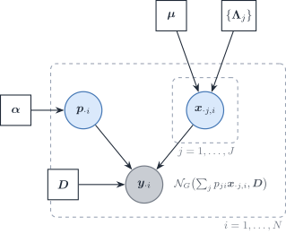

A Bayesian DeCovarT: latent purified profiles, the Wiener filter and variational EM
2026-10-28
Source:vignettes/theory-decovart-bayesian-wiener.qmd
Scope
Released DeCovarT integrates the purified profiles out and maximises the marginal likelihood of the bulk in the proportions (population generative vignette). This vignette keeps the profiles as latent variables. That gives three things the marginal likelihood hides: a closed-form estimate of each sample’s purified profiles once the proportions are known (the Wiener filter), an EM algorithm for the same maximum-likelihood estimate, and a Bayesian version with a prior on the proportions. The Bayesian methods already published for this task are reviewed in the distribution-aware deconvolution review. Nothing here is implemented in
fit_decovart().
Generative model with latent profiles
For bulk sample i and cell type j, let \boldsymbol{x}_{\cdot j,i}\in\mathbb{R}^{G} be the purified profile of type j in that sample, and \boldsymbol{\Lambda}_j=\boldsymbol{\Sigma}_j^{-1} the sparse precision exported by the gene-network step. The model is
\boldsymbol{p}_{\cdot i}\sim\mathrm{Dirichlet}(\boldsymbol{\alpha}), \qquad \boldsymbol{x}_{\cdot j,i}\overset{\text{ind}}{\sim}\mathcal{N}_G\bigl(\boldsymbol{\mu}_{\cdot j},\boldsymbol{\Lambda}_j^{-1}\bigr), \qquad \boldsymbol{y}_{\cdot i}\mid\boldsymbol{p}_{\cdot i},\{\boldsymbol{x}_{\cdot j,i}\} \sim\mathcal{N}_G\Bigl(\sum_jp_{ji}\boldsymbol{x}_{\cdot j,i},\ \boldsymbol{D}\Bigr), \tag{1}
with \boldsymbol{D} a diagonal measurement covariance (\sigma^{2}\mathbf{I}_G in the simplest case). Integrating the profiles out gives
\boldsymbol{y}_{\cdot i}\mid\boldsymbol{p}_{\cdot i}\sim \mathcal{N}_G\bigl(\boldsymbol{\mu}\boldsymbol{p}_{\cdot i},\ \boldsymbol{\Sigma}(\boldsymbol{p}_{\cdot i})+\boldsymbol{D}\bigr), \qquad \boldsymbol{\Sigma}(\boldsymbol{p})=\sum_jp_j^{2}\boldsymbol{\Sigma}_j, \tag{2}
which is the DeCovarT likelihood plus a diagonal residual. The residual matters for the latent formulation: with \boldsymbol{D}=\boldsymbol{0} the bulk is an exact linear function of the profiles, and their conditional law is degenerate.

Figure 1: The latent-profile form of DeCovarT. A Dirichlet prior generates the proportions of sample i; each cell type contributes one latent purified profile drawn from its reference Gaussian; the bulk is their proportion-weighted sum plus a diagonal measurement noise. Integrating the profiles out returns the released DeCovarT likelihood.
Profiles given the composition: MAP, BLUP and the Wiener filter
Released DeCovarT estimates \boldsymbol{p}_{\cdot i} after plugging \boldsymbol{x}_{\cdot j,i} by \boldsymbol{\mu}_{\cdot j}. The latent profiles themselves remain recoverable once \boldsymbol{p}_{\cdot i} is treated as known. Write the convolution explicitly,
\boldsymbol{x}_{\cdot j,i} \sim \mathcal{N}(\boldsymbol{\mu}_{\cdot j},\boldsymbol{\Sigma}_j), \qquad \boldsymbol{y}_{\cdot i} = \sum_j p_{ji}\,\boldsymbol{x}_{\cdot j,i}, \tag{3}
independent across j given \boldsymbol{p}_{\cdot i}. Then \boldsymbol{y}_{\cdot i}\sim\mathcal{N}(\boldsymbol{\mu}\boldsymbol{p}_{\cdot i},\boldsymbol{\Sigma}(\boldsymbol{p}_{\cdot i})) with \boldsymbol{\Sigma}(\boldsymbol{p})=\sum_j p_{ji}^{2}\boldsymbol{\Sigma}_j as in Eq. 2. The joint law of (\boldsymbol{x}_{\cdot j,i},\boldsymbol{y}_{\cdot i}) is Gaussian, so three classical criteria coincide:
- the maximum a posteriori \arg\max_{\boldsymbol{x}_j} p(\boldsymbol{x}_j\mid\boldsymbol{y}_{\cdot i},\boldsymbol{p}_{\cdot i});
- the best linear unbiased predictor (Henderson) of the random effect \boldsymbol{x}_{\cdot j,i} in a linear mixed model whose variance components \boldsymbol{\mu}_{\cdot j} and \boldsymbol{\Sigma}_j are known;
- the Wiener filter, the linear minimum mean-square estimator of \boldsymbol{x}_{\cdot j,i} from \boldsymbol{y}_{\cdot i}.
All three equal the posterior mean
\hat{\boldsymbol{x}}_{\cdot j,i} = \boldsymbol{\mu}_{\cdot j} + p_{ji}\,\boldsymbol{\Sigma}_j\, \boldsymbol{\Sigma}(\boldsymbol{p}_{\cdot i})^{-1} (\boldsymbol{y}_{\cdot i}-\boldsymbol{\mu}\boldsymbol{p}_{\cdot i}). \tag{4}
With the diagonal residual of Eq. 1, replace \boldsymbol{\Sigma}(\boldsymbol{p}_{\cdot i}) by \boldsymbol{\Sigma}(\boldsymbol{p}_{\cdot i})+\boldsymbol{D}. The gain p_{ji}\boldsymbol{\Sigma}_j\boldsymbol{\Sigma}(\boldsymbol{p})^{-1} shrinks the bulk residual back onto type j in proportion to that type’s weight and covariance. The experimental helper scripts/experimental/03_04_DeCovarT_estimate_CTS_MAP_Bayesian.R is this update with \boldsymbol{\Sigma}(\boldsymbol{p}) assembled by .compute_global_variance(). A production path must pass the fitted \boldsymbol{p}_{\cdot i}, not a vector of ones.
bMIND is the same BLUP with an scRNA-seq prior on (\boldsymbol{\mu}_{\cdot j},\boldsymbol{\Sigma}_j) and a posterior mean per sample (Wang et al. 2020). BLADE replaces the Gaussian by a gene-wise log-normal and infers the latents variationally (Andrade Barbosa et al. 2021). Neither estimates a sparse \boldsymbol{\Omega}_j. Eq. 4 purifies one bulk column. It does not, by itself, re-estimate the type-level moments (\boldsymbol{\mu}_{\cdot j},\boldsymbol{\Sigma}_j) from a cohort.
The posterior covariance completes Eq. 4. With \boldsymbol{W}=(\boldsymbol{\Sigma}(\boldsymbol{p})+\boldsymbol{D})^{-1},
\operatorname{Cov}(\boldsymbol{x}_{\cdot j,i},\boldsymbol{x}_{\cdot k,i}\mid\boldsymbol{y}_{\cdot i},\boldsymbol{p}_{\cdot i}) =\delta_{jk}\boldsymbol{\Sigma}_j-p_{ji}p_{ki}\,\boldsymbol{\Sigma}_j\boldsymbol{W}\boldsymbol{\Sigma}_k . \tag{5}
The cross-type blocks (j\neq k) are negative definite contributions: two types compete to explain the same residual, so overestimating one profile forces the other down. Any approximation that drops those blocks will be overconfident about each profile.
Expectation–maximisation for the DeCovarT estimate
The latent form gives an EM algorithm for the maximum of the marginal likelihood Eq. 2, with or without a prior on \boldsymbol{p}.
E-step. At the current \boldsymbol{p}^{(t)}, compute the posterior means \boldsymbol{m}_j of Eq. 4 and the covariances \boldsymbol{C}_{jk} of Eq. 5. Both need one Cholesky factor of \boldsymbol{\Sigma}(\boldsymbol{p}^{(t)})+\boldsymbol{D}, the same cost as one iteration of the released solver.
M-step. The prior on the profiles does not depend on \boldsymbol{p}, so only the observation term is maximised:
Q(\boldsymbol{p}) =-\tfrac12\Bigl[ (\boldsymbol{y}-\boldsymbol{M}\boldsymbol{p})^{\top}\boldsymbol{D}^{-1}(\boldsymbol{y}-\boldsymbol{M}\boldsymbol{p}) +\boldsymbol{p}^{\top}\boldsymbol{T}\boldsymbol{p}\Bigr] +\sum_j(\alpha_j-1)\log p_j, \qquad T_{jk}=\operatorname{tr}\bigl(\boldsymbol{D}^{-1}\boldsymbol{C}_{jk}\bigr), \tag{6}
with \boldsymbol{M}=[\boldsymbol{m}_1,\ldots,\boldsymbol{m}_J]. The quadratic part is concave (\boldsymbol{T} is positive semidefinite, being the expected value of a quadratic form), so the M-step is a concave program on the simplex when every \alpha_j\ge 1; \alpha_j=1 gives plain maximum likelihood. A scalar \boldsymbol{D}=\sigma^{2}\mathbf{I}_G can be updated in the same step, \sigma^{2}=\{\lVert\boldsymbol{y}-\boldsymbol{M}\boldsymbol{p}\rVert^{2}+\boldsymbol{p}^{\top}\operatorname{tr}(\boldsymbol{C})\boldsymbol{p}\}/G, where \operatorname{tr}(\boldsymbol{C}) is the J\times J matrix of block traces.
Each EM iteration increases the marginal log-likelihood (or the log-posterior), which the Newton-type solvers do not guarantee. Two limits apply.
- EM converges to a stationary point, not to the global maximum: the non-concavity of the DeCovarT likelihood (MLE properties) is unchanged by the algorithm.
- EM converges slowly when the latent profiles carry most of the uncertainty, that is when \boldsymbol{D} is small relative to \boldsymbol{\Sigma}(\boldsymbol{p}). As \boldsymbol{D}\to\boldsymbol{0} the fraction of missing information tends to one and EM stalls. The analytic score and Hessian of the derivatives vignette are then the faster route.
Mean-field variational EM with sparse precisions
The E-step above inverts a dense G\times G matrix even when every \boldsymbol{\Lambda}_j is sparse, because \boldsymbol{\Sigma}(\boldsymbol{p})=\sum_jp_j^{2}\boldsymbol{\Lambda}_j^{-1} is dense. A mean-field approximation q(\boldsymbol{p}_{\cdot i},\{\boldsymbol{x}_{\cdot j,i}\}) =q(\boldsymbol{p}_{\cdot i})\prod_jq(\boldsymbol{x}_{\cdot j,i}) avoids that inverse. Coordinate ascent on the evidence lower bound gives Gaussian factors q(\boldsymbol{x}_{\cdot j,i})=\mathcal{N}(\boldsymbol{m}_j,\boldsymbol{S}_j) with
\boldsymbol{S}_j^{-1}=\boldsymbol{\Lambda}_j+\mathbb{E}_q[p_j^{2}]\,\boldsymbol{D}^{-1}, \qquad \boldsymbol{m}_j=\boldsymbol{S}_j\Bigl(\boldsymbol{\Lambda}_j\boldsymbol{\mu}_{\cdot j} +\mathbb{E}_q[p_j]\,\boldsymbol{D}^{-1}\bigl(\boldsymbol{y}-\textstyle\sum_{k\neq j}\mathbb{E}_q[p_k]\,\boldsymbol{m}_k\bigr)\Bigr). \tag{7}
\boldsymbol{S}_j^{-1} is the sparse precision plus a diagonal, so a sparse Cholesky factor per type replaces the dense factor of the exact E-step. With a point mass q(\boldsymbol{p})=\delta_{\hat{\boldsymbol{p}}} (variational EM), the update for \boldsymbol{p} maximises
\mathcal{L}(\boldsymbol{p}) =-\tfrac12\Bigl[(\boldsymbol{y}-\boldsymbol{M}\boldsymbol{p})^{\top}\boldsymbol{D}^{-1}(\boldsymbol{y}-\boldsymbol{M}\boldsymbol{p}) +\textstyle\sum_jp_j^{2}\operatorname{tr}(\boldsymbol{D}^{-1}\boldsymbol{S}_j)\Bigr] +\sum_j(\alpha_j-1)\log p_j , \tag{8}
a quadratic program with a logarithmic barrier and no closed form. Compared with Eq. 6, the cross-type terms T_{jk}, j\neq k, are gone, because the mean-field factors are independent. The variational fixed point is therefore not the maximum-likelihood estimate: it inherits the overconfidence of a factorisation that ignores the negative posterior correlation between types (Eq. 5). It is a fast approximation for large sparse networks, to be checked against the exact EM on a subset of genes.
Priors on the composition
The prior can be written on the simplex or on the ILR chart used by the solvers (population generative vignette), and the two give different maximum a posteriori estimates.
- Dirichlet on \boldsymbol{p}. In \boldsymbol{p}, the log-prior \sum_j(\alpha_j-1)\log p_j is concave only when every \alpha_j\ge 1. Values below one encourage sparse compositions but make the MAP problem non-concave. After the change of variables to \boldsymbol{\rho}, the density picks up the Jacobian \prod_jp_j (up to a constant), and the log-prior becomes \sum_j\alpha_j\log p_j(\boldsymbol{\rho}). Each \log p_j(\boldsymbol{\rho})=(\mathbf{V}\boldsymbol{\rho})_j-\operatorname{LSE}(\mathbf{V}\boldsymbol{\rho}) is concave, so the log-prior is concave in \boldsymbol{\rho} for every \alpha_j>0 and its MAP stays in the interior.
- Logistic-normal on \boldsymbol{\rho}. A Gaussian prior \boldsymbol{\rho}\sim\mathcal{N}(\boldsymbol{m},\boldsymbol{V}_{\rho}) adds -\boldsymbol{V}_{\rho}^{-1} to the Hessian of the released solver and leaves its Newton–Raphson machinery unchanged. It is the natural prior when compositions of related samples are expected to be correlated, which a Dirichlet cannot express.
Either prior regularises the boundary: where the Wald interval of a proportion near zero degenerates, the posterior stays proper. A credible interval is not a frequentist confidence interval, and the prior has to be defended on biological grounds (population inference vignette).
Full posterior
Three routes go beyond the MAP, in increasing cost.
- Laplace approximation in \boldsymbol{\rho}. Use the analytic Hessian of the ILR log-likelihood plus the Hessian of the log-prior at the MAP, then push draws of \boldsymbol{\rho} through the softmax. Every draw stays inside the simplex.
- Hamiltonian Monte Carlo on \boldsymbol{\rho}. The marginal likelihood Eq. 2 and its gradient are available in closed form, so a sampler such as Stan can target p(\boldsymbol{\rho}\mid\boldsymbol{y}) directly, without the latent profiles. The profiles are then drawn from their Gaussian conditional Eq. 4, Eq. 5 given each draw.
- Stochastic variational inference. A Gaussian q(\boldsymbol{\rho}) is reparametrisable, \boldsymbol{\rho}=\boldsymbol{m}+\boldsymbol{L}\boldsymbol{\varepsilon}, so low-variance gradients of the ELBO are available. The score-function (REINFORCE) estimator is the fallback for factors that cannot be reparametrised, at a higher variance.
The Bayesian methods that already use this latent structure, bMIND, BLADE, BayesPrism and others, differ in the likelihood scale, the prior on the covariance and the inference algorithm; they are compared in the review.